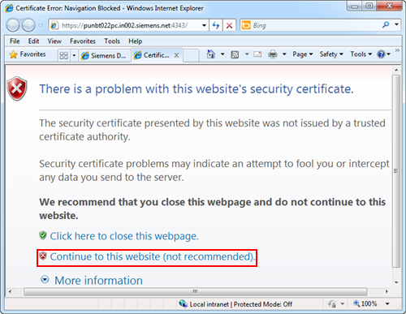
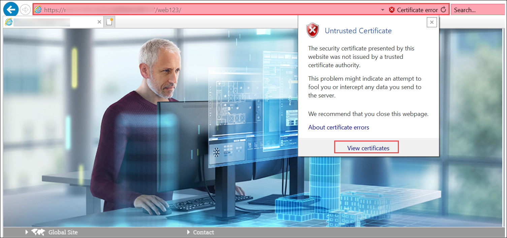

Install the Website Certificate
- You have created a website or web application using SMC and the URLs (HTTPs) are available.
- You have not installed the certificate used in the website.
- Browse the website or web application HTTPs URL in the default browser.
- The Certificate Error: Navigation Blocked page displays due to an untrusted certificate.
- Click Continue to this website (not recommended).

- In the Desigo CC web page address bar, a Certificate Error security report displays.
- Click Certificate Error to open a menu that contains a View certificates hyperlink.

- Click View Certificates.
- In the Certificate dialog box that displays, click Install Certificate.
NOTE: The same website/web application certificate (host/self-signed) that was provided during website/web application creation, displays and you can proceed with installing it in the TRCA store. However, in order for the host certificate to work with Windows App client, you must import the root of the host certificate that you used while creating website in the TRCA store. 
- Depending on the type of certificate used, proceed with importing the certificate as follows:
- If the certificate you used while creating a website is a self-signed certificate, then you must install it in the Trusted Root Certification Authorities store.
- If the certificate you used while creating a website is a host certificate, then you must install the root certificate of the host in the Trusted Root Certification Authorities store.

NOTE:
If the Certificate Error: Navigation Blocked page displays, even after installing the website certificate, then verify that the Subject Alternative Name (SAN) property for the selected certificate contains the host name specified while creating the website.
For example, if the website Host name field contains the full computer name, ABCXY022PC.dom01.company.net, then the certificate provided in the Certificate issued to field must contain the full computer name ABCXY022PC.dom01.company.net as one of its names in the SAN property.